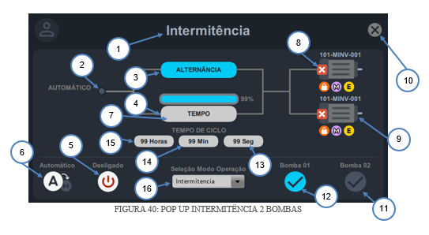

8.1 - INTERMITÊNCIA 2 BOMBAS
A funcionalidade de intermitência de duas bombas consiste em uma configuração adicional aplicada a determinados equipamentos do sistema, permitindo que duas bombas operem de forma alternada entre si.
O sistema permite configurar diferentes modos de funcionamento, possibilitando a alternância automática entre as bombas conforme os parâmetros definidos pelo operador.
Objetivo: permitir o revezamento automático entre duas bombas, proporcionando flexibilidade na operação do sistema.
8.1.1 - FACEPLATE
Para cada equipamento do sistema que possuir a funcionalidade de temporizador, será disponibilizado um símbolo de identificação próximo ao equipamento, conforme apresentado na Figura 39.
Ao clicar nesse símbolo, será aberta a janela de configuração (popup), permitindo ao operador acessar os parâmetros e modos de funcionamento da intermitência.

A Figura 40 apresenta a janela de configuração da intermitência de duas bombas, na qual estão disponíveis os comandos, indicadores e parâmetros necessários para a operação.

8.1.2 - OPERAÇÃO
DESCRIÇÃO DOS ÍCONES DA POPUP DE INTERMITÊNCIA
A seguir, são apresentados os elementos disponíveis na janela de intermitência, juntamente com suas respectivas funções: